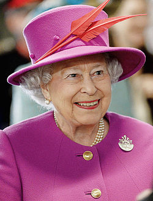

Содержание:
| Elizabeth II | |
|---|---|
|  | |
| Королева Великобритании и Северной Ирландии |
|
| Коронация: | 2 июня 1953 года |
| Предшественник: | Георг VI |
| Наследник: | Чарльз, принц Уэльский |
| Глава Содружества наций |
|
| Предшественник: | Георг VI |
| Вероисповедание: | Англиканство |
| Рождение: | 21 апреля 1926[1] (89 лет) |
| Род: | Виндзоры |
| Отец: | Георг VI |
| Мать: | Елизавета Боуз-Лайон |
| Супруг: | Филипп Маунтбаттен |
| Дети: |
1. Чарльз, |
| Монограмма: |  |
Биография
Детство и юность
обложке журнала «Тайм»
29 апреля, 1929 г.
Старшая дочь принца Альберта, герцога Йоркского (будущего короля Георга VI, 1895—1952 гг.) и леди Елизаветы Боуз-Лайон (1900—2002 гг.). Её дедушки и бабушки: по отцу — король Георг V (1865—1936 гг.) и королева Мария, принцесса Текская (1867—1953 гг.); по матери — Клод Джордж Боуз-Лайон, граф Стратмор (1855—1944 гг.) и Сесилия Нина Боуз-Лайон (1883—1938 гг.).
Принцесса Елизавета Александра Мария родилась в лондонском районе Мейфэр в резиденции графа Стратмор на Брютон-стрит, дом № 17. Сейчас район перестроен, и дом более не существует, но на этом месте установлена мемориальная доска[8]. Своё имя получила в честь матери (Елизавета), бабушки (Мария) и прабабушки (Александра).
При этом отец настаивал, чтобы первое имя дочери было как у герцогини. Сначала девочке хотели дать и имя Виктория, но потом передумали. Георг V заметил: «Берти обсуждал со мной имя девочки. Он назвал три имени: Елизавета, Александра и Мария. Имена все хорошие, я так ему и сказал, а насчёт Виктории я с ним абсолютно согласен. Это было лишнее»[8]. Крестины принцессы Елизаветы прошли 25 мая в часовне Букингемского дворца, позднее разрушенной в годы войны.
В 1930 родилась единственная сестра Елизаветы — принцесса Маргарет[2].
Королева Великобритании
в 1953 году
Король Георг VI, отец Елизаветы, умер 6 февраля 1952 года. Елизавета, в то время находившаяся вместе с мужем на отдыхе в Кении, была провозглашена королевой Великобритании[14]. Церемония коронации Елизаветы II состоялась в Вестминстерском аббатстве 2 июня 1953 года[15]. Это была первая коронация британского монарха, транслировавшаяся по телевидению, и, как считается, это событие заметно способствовало росту популярности телевещания[16]. После этого в 1953—1954 гг. королева совершила шестимесячное турне по государствам Содружества, британским колониям и другим странам мира. Елизавета II стала первым монархом, посетившим Австралию и Новую Зеландию[15].В 1957 году, после отставки премьер-министра сэра Энтони Идена, ввиду отсутствия в Консервативной партии четких правил выбора лидера, Елизавете II надлежало назначить нового главу правительства из числа консерваторов. После консультаций с видными членами партии и экс-премьер-министром Черчиллем, главой правительства был назначен 63-летний Гарольд Макмиллан[17]. В этом же году Елизавета впервые совершила визиты в США[18] и Канаду, как королева Канады[19]. В этом же году впервые выступила на сессии Генеральной ассамблеи ООН[20]. Присутствовала при открытии сессии канадского парламента (впервые в истории с участием британского монарха). Продолжила свои путешествия в 1961 году, когда совершила визиты на Кипр, в Ватикан, Индию, Пакистан, Непал, Иран, а также Гану[21].В 1960 году у королевы родился второй сын, принц Эндрю, a в 1964 — третий сын, принц Эдуард[13]. В 1963 году, после отставки премьер-министра Макмиллана, по его совету Елизавета назначила премьером Александра Дуглас-Хьюма[22]. В 1974 году начал назревать политический кризис после выборов в парламент, в результате которых ни одна из партий не получила большинства голосов. Хотя крупнейшей партией в парламенте оказалась Консервативная партия, премьер-министром назначен лидер лейбористов Гарольд Вильсон[23]. Через год также произошёл политический кризис в Австралии (англ.)русск., в ходе которого Елизавета II отказалась отменить решение генерал-губернатора Джона Керра об отставке премьер-министра Гофа Уитлэма. В 1976 году Елизавета II торжественно открыла (как королева Канады) XXI Олимпийские игры в Монреалe[24]. 1977 год стал важной датой для королевы — отмечалось 25-летие пребывания Елизаветы II на британском престоле, в честь чего было проведено множество торжественных предприятий в странах Содружества[25]. В конце 1970-х — начале 1980-х на королевскую семью был совершен ряд покушений. В частности, в 1979 году произошло убийство террористами «Временной Ирландской республиканской армии» дяди принца Филиппа — влиятельного государственного деятеля и военачальника лорда Луиса Маунтбаттена[26]. А в 1981 году было безуспешное покушение на Елизавету II во время военного парада в честь праздника «официального дня рождения» королевы[16].В 1981 году состоялась свадьба сына Елизаветы II принца Чарльза и Дианы Спенсер[27], которая позже станет большой проблемой для королевской семьи. В это время в 1982 году в результате изменений в конституции Канады британский парламент утратил какую-либо роль в канадских делах, но британская королева все же осталась главой Канадского государства[28]. В этом же году состоялся первый за последние 450 лет визит римского Папы Иоанна Павла II в Великобританию (королева, являющаяся главой англиканской церкви, принимала его лично)[15]. В 1991 году Елизавета стала первым британским монархом, выступившим на совместной сессии палат Конгресса США[29]. 1992 год стал «ужасным годом», по определению самой Елизаветы II. Двое из четырёх детей королевы — принц Эндрю и принцесса Анна — развелись со своими супругами, принц Чарльз разошёлся с принцессой Дианой, Виндзорский замок сильно пострадал от пожара, введена обязанность для королевы платить подоходный налог, заметно сокращено финансирование королевского двора[30]. В 1996 году, по настоянию королевы, был подписан официальный развод между принцем Чарльзом и принцессой Дианой. Через год, в 1997 году, произошла трагическая гибель принцессы Дианы в автокатастрофе в Париже, которая потрясла не только королевскую семью, но и миллионы обычных британцев. За сдержанность и отсутствие какой-либо реакции на гибель бывшей невестки, в адрес королевы сразу же посыпались критические замечания[31]. В 2002 году были проведены торжественные мероприятия в честь 50-летия пребывания Елизаветы II на британском престоле (Золотой юбилей)[14]. Но в этом же году произошла кончина сестры королевы — принцессы Маргарет[32] и королевы-матери — королевы Елизаветы[33]. В 2008 году впервые в истории англиканская церковь, главой которой является Елизавета, провела богослужение в Великий четверг, в котором традиционно участвует царствующий монарх, за пределами Англии или Уэльса — в соборе св. Патрика в г. Арма в Северной Ирландии. В 2010 году во второй раз выступила на заседании Генеральной ассамблее ООН. Представляя королеву, генеральный секретарь ООН Пан Ги Мун назвал её «якорем нашей эпохи»[34]. В 2011 году состоялся первый в истории государственный визит британского монарха в независимую Ирландию[35]. В этом же году прошла свадьба принца Уильяма (внука Елизаветы II) и Кэтрин Миддлтон[36]. В 2012 году прошли XXX Олимпийские игры в Лондоне, торжественно открытые Елизаветой II[37], а также был утверждён новый закон, изменяющий порядок престолонаследования, по которому мужчины-наследники теряют приоритет над женщинами[38]. В этом же году в Великобритании и других странах торжественно отмечался 60-летний («бриллиантовый») юбилей пребывания Елизаветы II на престоле. Кульминацией праздничных мероприятий стали выходные дни 3-4 июня 2012[39]:
Елизавету II в год восшествия на
престол (1952) и в год
Бриллиантового юбилея (2012)

В соответствии с британской традицией парламентарной монархии, Елизавета II выполняет в основном представительские функции, практически не оказывая влияния на управление страной. Однако в течение своего царствования она успешно поддерживает авторитет британской монархии. В её обязанности входит посещение различных стран с дипломатическими визитами, прием послов, встречи с высокопоставленными государственными лицами (особенно с премьер-министром), чтение ежегодных посланий парламенту, вручение наград, посвящение в рыцари и пр[41]. Также королева ежедневно просматривает основные британские газеты и отвечает при помощи слуг на некоторые письма, которые ей высылают в огромных количествах (200—300 шт. ежедневно)[41]. На протяжении своего пребывания на троне королева поддерживала корректные отношения со всеми премьер-министрами. При этом она всегда оставалась верна традиции английских королей новейшего времени — находиться над политическими схватками. Как конституционный монарх, Елизавета II не должна выражать публично свои политические симпатии или антипатии. Она всегда выполняла это правило, действуя непублично — поэтому её политические взгляды остаются неизвестными. Трижды за время своего правления королева имела конституционные проблемы с формированием британского правительства. В 1957 и в 1963 годах, при отсутствии четкого механизма избрания лидера в Консервативной партии, именно королева должна была решить, кому поручить формирование правительства после отставок Энтони Идена и Гарольда Макмиллана. В 1957 году Энтони Иден отказался советовать королеве, кого назначить его преемником, и она обратилась за советом к Уинстону Черчиллю, как к единственному из живых в то время консервативных премьеров (по прецеденту, за которым после отставки Эндрю Бонар Лоу в 1923 г. король Георг V советовался с отцом лорда Солсбери и бывшим премьером Артуром Бальфуром). В 1963 г. Гарольд Макмиллан сам советовал назначить своим преемником Алека Дуглас-Хоума. А в 1974 г., после отставки Эдварда Хита в результате неясного исхода выборов, Елизавета II назначила премьер-министром лидера оппозиции Гарольда Вильсона. Во всех этих случаях королева действовала согласно британской конституционной традиции, по которой она не должна принимать никаких важных решений без совета своих министров и тайных советников. Помимо этого, британские премьеры встречаются с королевой каждую неделю. Королева более осведомлена в большинстве вопросов, чем кажется на первый взгляд. Кроме того, королева имеет постоянные встречи с другими министрами и премьерами государств Содружества, когда они находятся в Великобритании с визитом. Также, во время своего пребывания в Шотландии она встречается с первым министром Шотландии. Министерство и дипломатические представительства Великобритании присылают ей регулярные отчеты.
Роль в политической и общественной жизни
Хотя принято, что королева не вмешивается в политику, но из-за того, что за своё долгое правление она имела возможность работать со многими премьерами и лидерами других стран, к её советам всегда относятся внимательно. В своих мемуарах Маргарет Тэтчер писала о своих еженедельных встречах с королевой Елизаветой: Каждый, кто думает что они [встречи] — простая формальность или социальная условность, глубоко ошибается. На самом деле они проходят в спокойной деловой атмосфере, и Её Величество всегда демонстрирует свою способность охватывать широкий круг проблем и свой большой опыт — Thatcher, Margaret. The Path to Power. — HarperCollins, 1997. Также Елизавета II активно занимается благотворительностью и общественной деятельностью. Королева Британии является попечителем более чем 600 различных общественных и благотворительных организаций[42]. Основная статья: Королевские прерогативы Кроме обязанностей Елизавета II также обладает определенными неотъемлемыми правами, как монархиня (королевские прерогативы). Например, она может распустить парламент, отклонять кандидатуру премьер-министра (которая ей кажется неподходящей) и прочее.Семья и дети
20 ноября 1947 года Елизавета вступила в брак с лейтенантом Филиппом Маунтбеттеном (род. 10 июня 1921), сыном греческого принца Андрея, получившим титул герцога Эдинбургского. В их семье родилось четверо детей:
| Имя | Дата рождения | Дети | Внуки |
|---|---|---|---|
| Чарльз, принц Уэльский | 14 ноября 1948 | ||
| принцесса Анна | 15 августа 1950 | |
Саванна Филлипс, Айла Елизавета Филлипс, Миа Грейс Тиндэлл |
| принц Эндрю, герцог Йоркский | 19 февраля 1960 | принц Эдвард, граф Уэссекский | 10 марта 1964 | |
Официальные титулы, награды
Полный титул Елизаветы II в Великобритании звучит как «Её Величество Елизавета II, Божией милостью Соединённого Королевства Великобритании и Северной Ирландии и иных своих царств и территорий Королева, Глава Содружества, защитница веры»[46][47]. В период царствования Елизаветы II во всех странах, признающих британского монарха своим главой государства, были приняты законы, согласно которым в каждой из этих стран британский монарх выступает в качестве главы данного конкретного государства (англ.)русск., независимо от своих титулов собственно в Великобритании или в третьих странах. Соответственно, во всех этих странах титул королевы звучит аналогичным образом, с заменой наименования государства. В некоторых странах из титула исключены слова «защитница веры». Например, в Австралии титул звучит следующим образом: «Её Величество Елизавета II, Божией милостью Королева Австралии и иных своих царств и территорий, Глава Содружества»[48]. На островах Гернси и Джерси также Елизавета II носит титул герцога Нормандского[49], на острове Мэн — титул «лорд Мэна»[50]. Государства, главой которых являлась или является Елизавета II При восшествии на престол в 1952 году, Елизавета стала королевой семи государств: Великобритании, Канады, Австралии, Новой Зеландии, Южной Африки, Пакистана и Цейлона. В период её царствования некоторые из этих стран стали республиками. Одновременно в результате процесса деколонизации многочисленные британские колонии обрели независимость. В некоторых из них королева Великобритании сохранила статус главы государства, в других — нет. Отмена монархии в первоначальных владениях Елизаветы II: • Пакистан — в 1956 году (бывший Доминион Пакистан)[51]. • Южная Африка — в 1961 году (бывший ЮАС)[52]. • Цейлон (Шри-Ланка) — в 1972 году (бывший Доминион Цейлон)[53]. Новые независимые государства, сохранившие монархию[54]: • Антигуа и Барбуда • Багамские острова • Барбадос • Белиз • Гренада • Папуа — Новая Гвинея • Сент-Винсент и Гренадины • Сент-Киттс и Невис • Сент-Люсия • Соломоновы Острова • Тувалу • Ямайка Новые независимые государства, отказавшиеся от монархии[54]: • Гайана • Гамбия • Гана • Кения • Маврикий • Малави • Мальта • Нигерия • Сьерра-Леоне • Танганьика • Тринидад и Тобаго • Уганда • Фиджи Награды Елизавета II в Великобритании и странах Содружества, а также в иных государствах является главой ряда рыцарских орденов, а также имеет воинские звания, многочисленные почетные звания, учёные степени. Помимо этого она является кавалером различных внутригосударственных британских наград, а также ряда различных наград иностранных государств.
Общественное восприятие
Большинство британцев положительно оценивают институт конституционной монархии. По опросу 2012 г. примерно 69 % считают, что без монархии стране было бы хуже; 60 % же считают, что монархия способствует поднятию имиджа страны за рубежом, и лишь 22 % были против монархии[55].
Критика
Несмотря на положительное отношение большинства своих подданных, королева на протяжении своего правления неоднократно подвергалась критике, в частности:
Хобби и личная жизнь
Среди интересов королевы — разведение собак (среди них корги, спаниели и лабрадоры), фотография, верховая езда, а также путешествия[50][59]. Елизавета II, поддерживая свой престиж королевы Содружества, очень активно путешествует по своим владениям[60], а также бывает и в других странах мира (например, в 1994 году она посещала Россию[61]). На её счету более 325 зарубежных визитов (за время своего царствования Елизавета посетила более 130 стран)[62]. С 2009 года начала заниматься садоводством[63]. Помимо английского также свободно владеет французским языком[50].
Память
В культуре
В кино